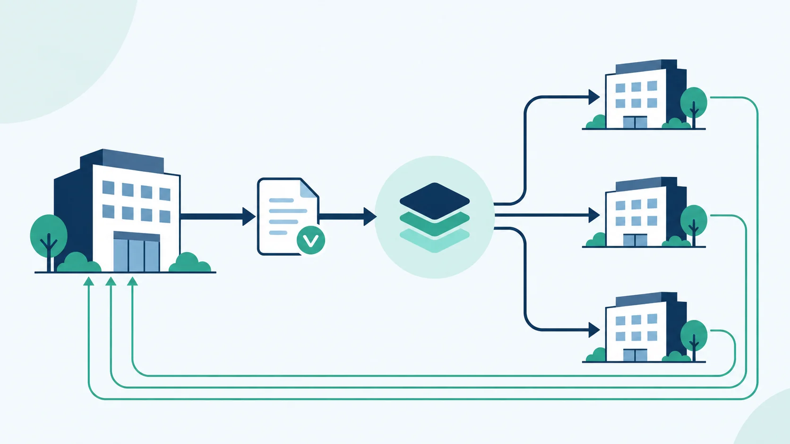

Article · 飞函
Article · 飞函
总部发布制度修订稿，怎样让不同分支机构按同一版本讨论
总部把制度修订稿发给各分支机构征求意见。东区先下载了一份，西区在聊天记录里找到另一份，几天后两边都说自己讨论的是“最新版”。等意见汇总到总部，分歧可能并不在条款本身，而在各方看到的稿件不同。
要让讨论有效，先要回答一个简单的问题：本轮意见究竟针对哪一版？
先确定唯一的讨论基准
总部可为每轮征求意见设定明确的版本号、发布日期、反馈截止时间和负责汇总的人，并指定一个统一的文件入口。通知里写清这些信息，分支机构就能在提出意见前核对稿件。文件名也应包含版本号，避免多个文件都叫“制度修订稿最终版”。
飞函网盘支持共享空间，以及按成员或部门分配共享权限。总部可据此组织制度材料的访问范围：需要参与讨论的机构获取稿件，稿件维护人员负责更新发布。分支机构收到飞函消息后，从通知指向的统一入口查阅材料，减少依赖各自保存的附件。

让每条意见都能找到对应条款
收集反馈时，要求分支机构写明版本号、条款编号、建议修改内容和理由。总部汇总后，先核对意见所依据的版本，再处理相互冲突的建议。需要当面澄清的条款，可以借助飞函视频会议的屏幕共享，让各方同时查看同一段内容；会议结束后仍把结论记录到统一的意见清单中。
如果总部在讨论期间调整了稿件，应发布新的版本号，并说明本轮意见继续按原版收集，还是改按新版提交。旧版已收到的反馈也要保留对应关系，不能只替换文件、让各机构自行猜测讨论基准。
这样，消息负责通知和沟通，统一入口承接稿件，版本号与意见清单连接讨论和决策。总部最终看到的，不只是“各地都已反馈”，而是每条建议基于哪一版、针对哪一条，以及该如何处理。